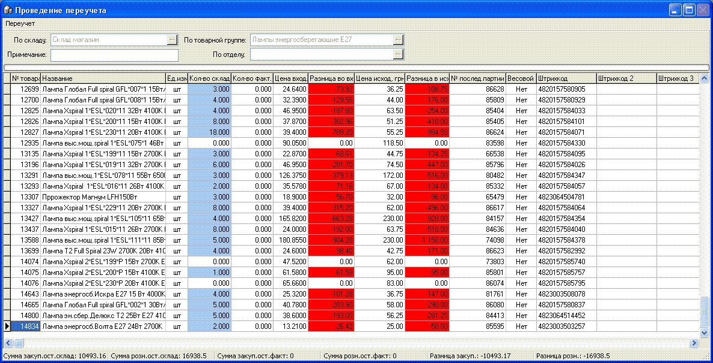

Одним из основных документов, используемых в программе, является переучет.При помощи этого документа периодически сличаются остатки, которые числятся в базе данных с фактическими остатками в магазине, списываются недостачи и ставятся на приход излишки товара. Обычно, переучет проводится при пересменке персонала, как правило 1 раз в 2 недели, однако, может проводиться и с другой периодичностью.По результатам проведенного переучета анализируют качество работы персонала, его добросовестность, выявляют хищения (особенно при одновременном использовании видеонаблюдения и системы кеш-контроля).Работа с переучетом обычно делится на 3 этапа:1. Создание нового переучета и его печать или выгрузка в терминал сбора данных. Сохранение этого переучета без корректировки остатков.2. Проведение подсчета остатков - в это время движение по данному товару должно быть остановлено - никаких продаж или приходов (как в программе, так и фактически - никаких поступлений в торговый зал) этого товара.3. Открытие ранее сохраненного переучета, внесение в него фактических остатков (вручную с листа или загрузка из терминала сбора данных). Сохранение этого переучета с корректировкой остатков.